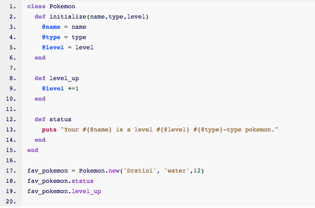
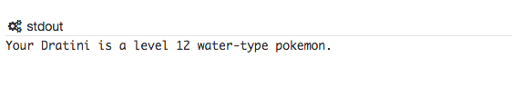

Classes
The Object Template
July 20, 2015
Classes are an extremely useful too for creating multiple objects that are apart of the same category or class. Let's explore how they work with an example using one of the best games of my childhood...and adulthood, Pokemon!


Let's just go through each part of the code starting from the top. The "class Pokemon" defines the class of objects that we will be creating as pokemon, so each object that we create from this class will be a pokemon.On line 17, we see how this happens by creating a variable called "fav_pokemon," which creates a new pokemon object by setting it equal to the Pokemon class and calling 'new' on it. The parameters passed after new will be used on line 2 as the main variables to be used by the class and define the instance variables of the class. Instance variables are a bit different from normal local variables we have used in the past. The a differentiated by the '@' symbol followed by its name, and are seen throughout the entire scope of the class.
The instances variables of name, type, and level are initialized on lines 3, 4, and 5, so that they can be set to whatever information the user passed through as the information for that particular object of the class. If we want to output these instance variables to the console, we just use the #{} symbols in the string and make sure to the include the '@' in the name of the instance variable and we can output its value easily. Line 13 shows an example of this implementation.
Each class we create also defines its own intance methods that make up the information pertinant to the objects it creates. In our Pokemon class, we will want to create pokemon, check their status, and see them level up. So these are the methods that are involved in creating Pokemon. The 'new' method is not exactly an instance method however since that is a method that comes by fault with each class, but our other two methods ,"level_up" and "status" are. These are called on lines 18 and 19 and are done so in a manner similar to other method calls. The only difference here is that these methods will only work for objects created from the Pokemon class.
So there you have it, the basics of how to use a class using on of the best games of all time!